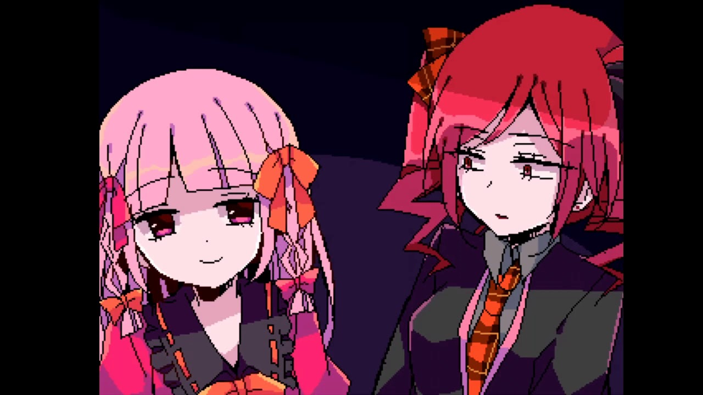

about game
Сюжет игры повествует о Клэр Эфлорд, молодой девушке, которая вместе с четырьмя другими людьми оказывается запертой в проклятом особняке.
В течение пяти дней вместе с группой она должна найти способ сбежать из особняка, попутно раскрывая секреты и узнавая правду о легендарном сокровище, исполняющем желания.


Игра поделена на четыре сценария, каждый из которых связан с разным героем, также попавшем в ловушку вместе с Клэр.
За завершение каждого сценария игрок получает цветной осколок, который необходим для развития истории
Игрок играет в основном от лица Клэр и с помощью неё взаимодействует с другими персонажами и узнаёт больше о секретах особняка.
Хотя игра по большей части состоит из сюжета, в ней присутствуют небольшие боевые элементы, а также головоломки и другие мини-игры.
